PROJECTSPROJECTSPROJECTSPROJECTS
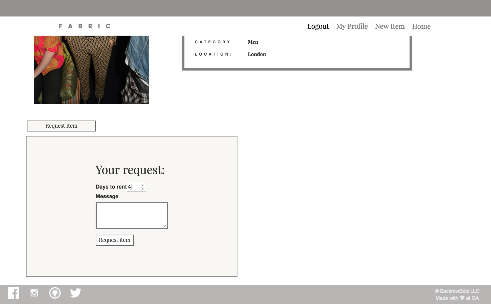
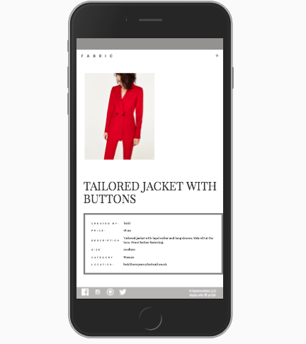
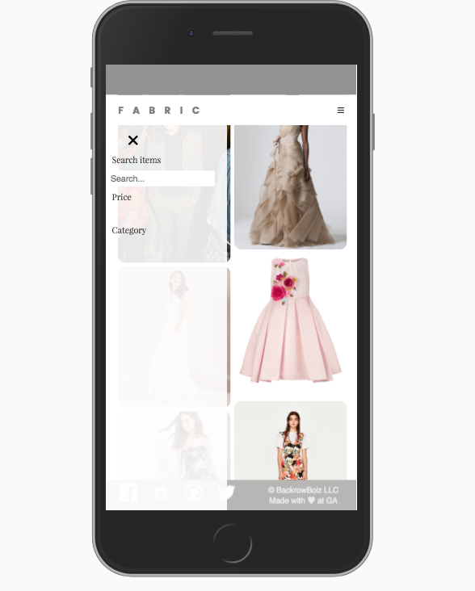
FABRIC
What is it?
Fabric enables users to rent items of clothing by making rental requests and paying online using the ‘Stripe’ API. This was a group project so the process was managed and carefully tracked using GitHub for source control. The app was built on Node.js, with AngularJS for the client side and Stripe, as the 3rd party payment gateway. Task management was achieved using Trello. My key responsibility was to configure the client side.Key Technology used
- MongoDB
- AngularJS
- Express.js
- Node.js
- Github and Instagram Authentication
- Stripe API
- Nodemailer
- SASS and CSS
- Bootstrap
- Amazon Web Services
- gulp.js
- PaaS
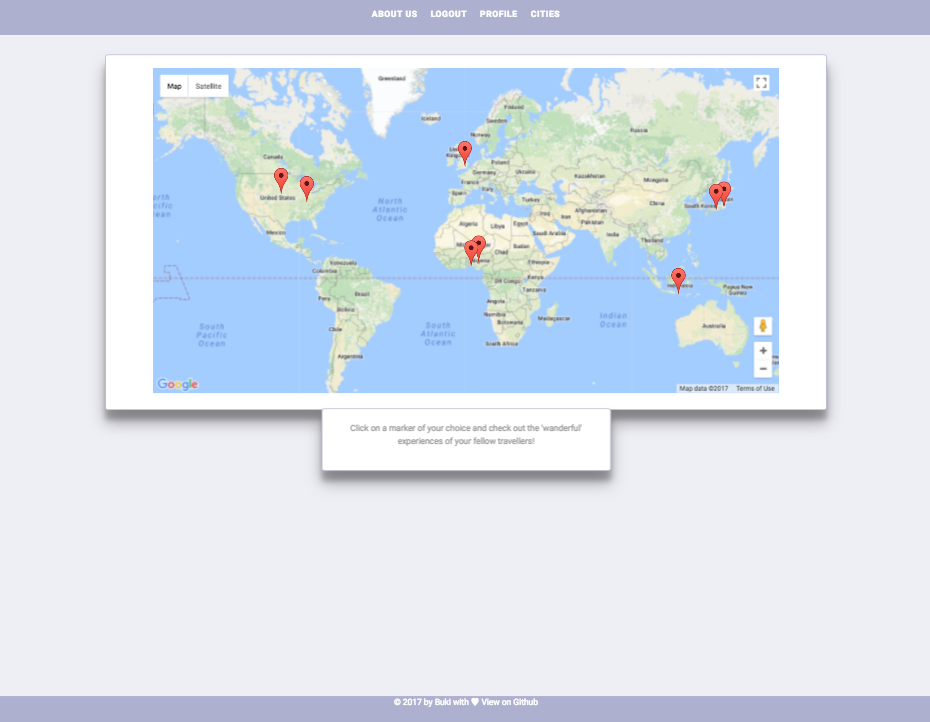
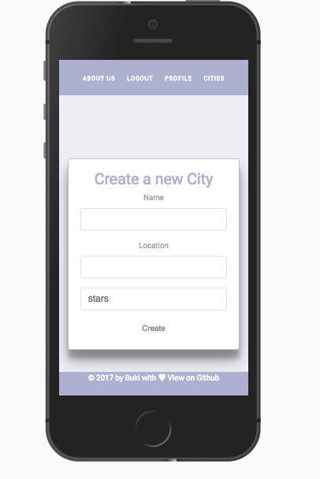
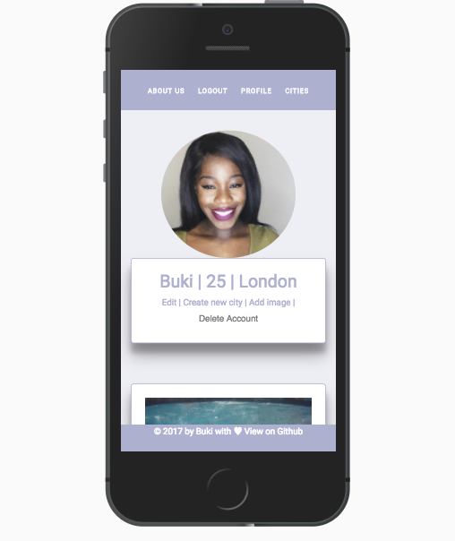
wanderful
What is it?
Wanderful is an app aimed at solo female travellers. It allows users to connect with other solo female travellers and share experiences while travelling through different cities. I planned the app using Trello then went on to wire-framing my ideas on paper and Balsamiq. ‘Wanderful’ is a RESTful app built using Node.js, jQuery and MongoDB to set up the database. HTML5 was also used and to style I used a combination of Bootstrap, SAAS and CSS3. The integrated Google Maps API, enables users to show different locations which they have visited.Key Technology used?
- MongoDB
- jQuery
- Express.js
- Instagram Authentication
- Google Maps API
- SASS and CSS
- Bootstrap
- gulp.js
- PaaS
- Amazon Web Services
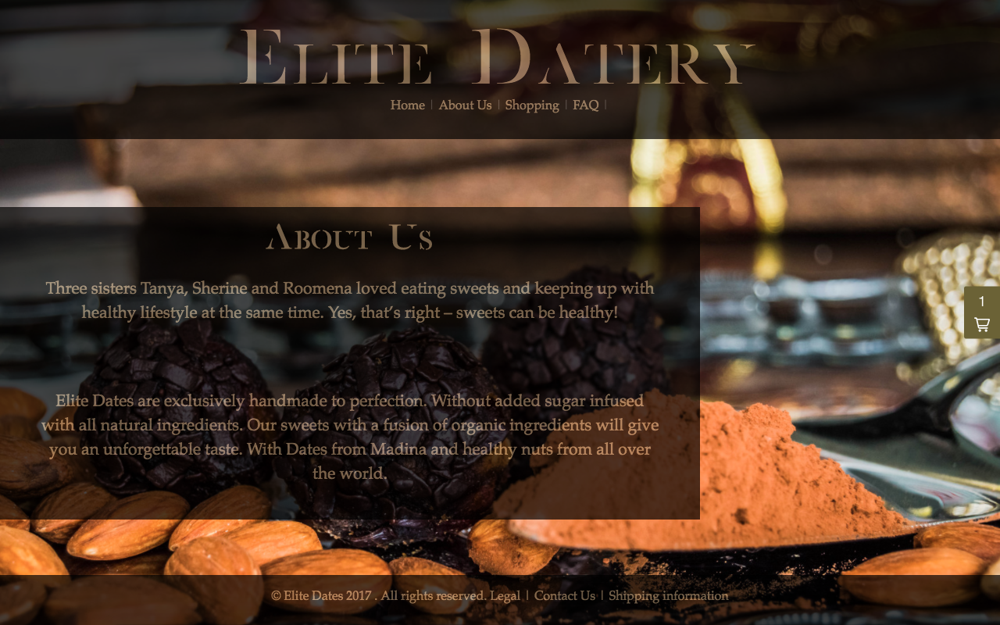
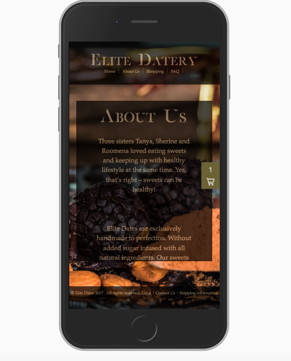
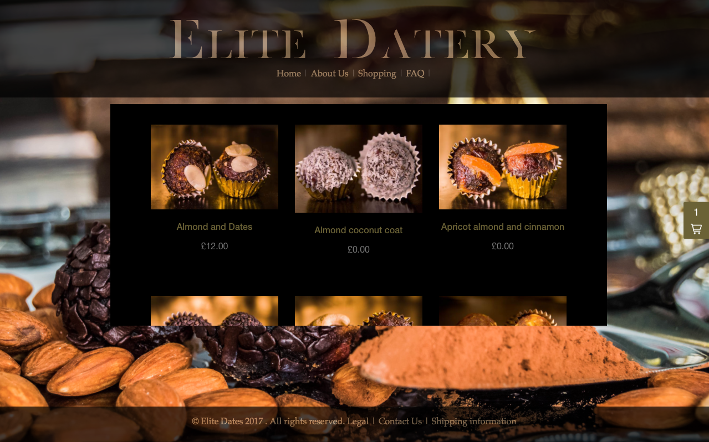
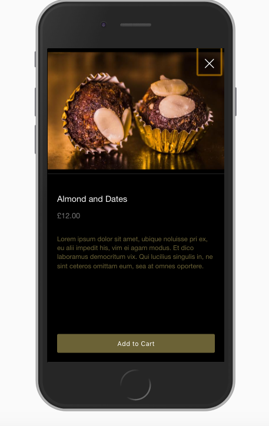
ELITE DATERY
What is it about?
This was my first project, which inspired to choose web deveelopment as a full time career.My client was a startup called ‘Elite Datery’, focusing on producing and selling homemade luxury dates. They needed a website that matched their personality to increase their online presence and attracted customers. As part of the development process I met with clients to understand their needs and draw up a list of requirements. Then researched the industry standards of the product, the needs of end user and study their potential competitors. Following that I produced a mock up, focusing on layout & structure and visual aesthetics using Sketch. The website was developed and styled using HTML, CSS and JavaScript. Using Filezilla I deployed the final product on Wordpress, making it accessible to the end user.
Key Technology used?
- HTML5
- CSS3
- JavaScript
- Wordpress
- Shopify Plugin
- Sketch App
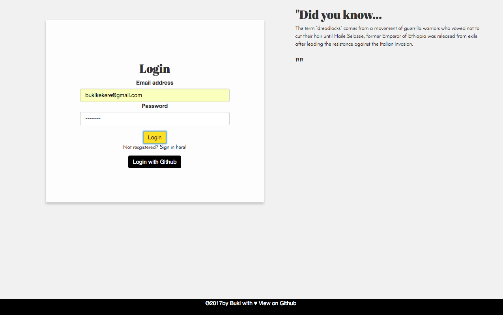
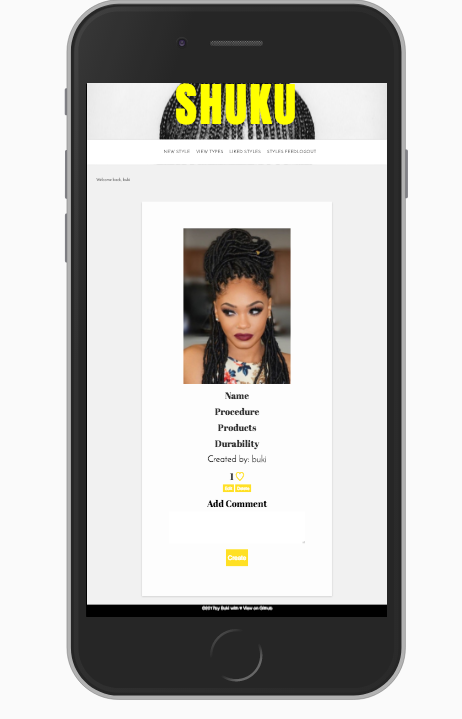
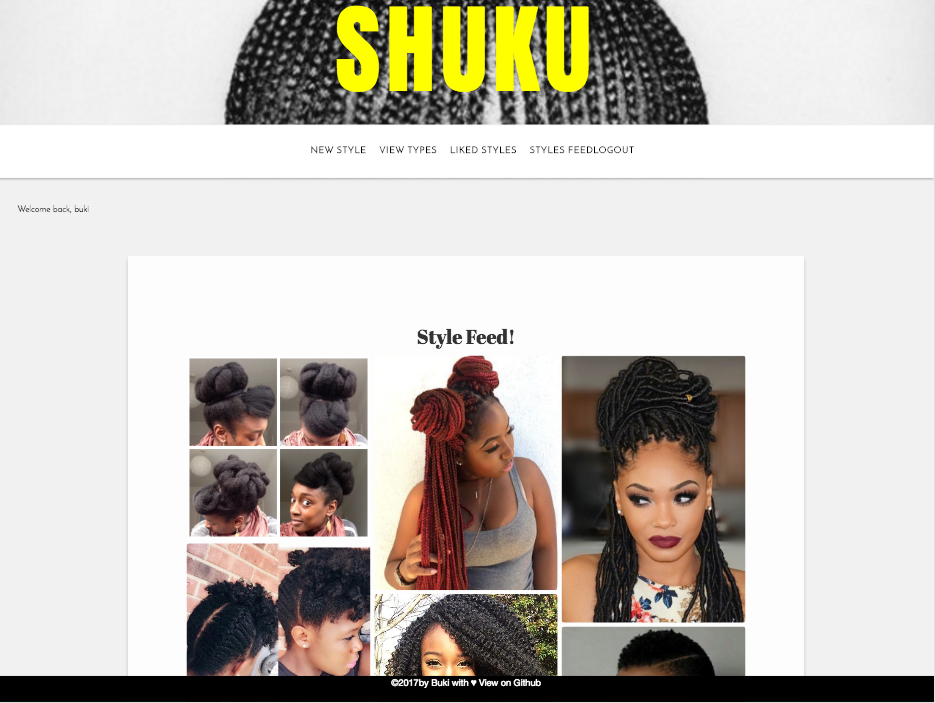
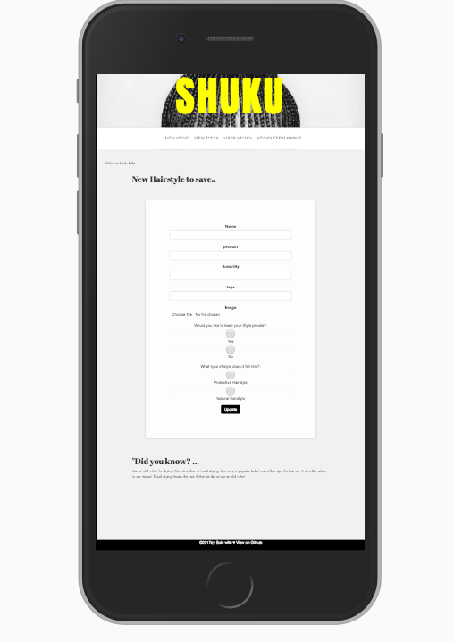
SHUKU
What is it about?
SHUKU is an app that let’s the user create a visual database of all their hairstyles. The social media aspect of the app let’s users also like and save images of styles that they particularly like. The backend API was built using Rails and the database was formed using PostgreSQL. AngularJS was used to the frontend.Key Technology used?
- PostgreSQL
- Ruby on Rails
- AngularJS
- Github Authentication
- SASS and CSS
- Bootstrap
- gulp.js
- PaaS
- Amazon Web Services
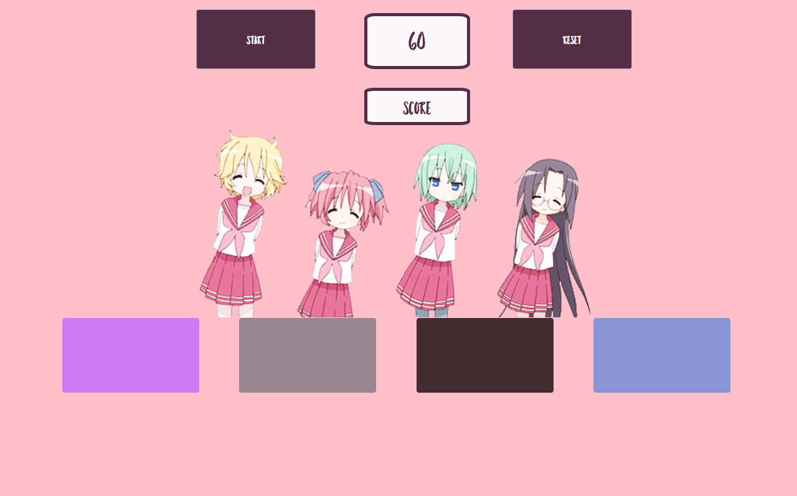
SIMON SAYS!
What is it?
“Simon Says” is a JavaScript-based game, with a twist. The game requires the user to replicate a randomly colour sequence, The twist comes in the form of the Anime theme, which I am a huge fan of!Key Technology used?
- HTML5
- jQuery
- JavaScript
- CSS3
- Boostrap
- PaaS